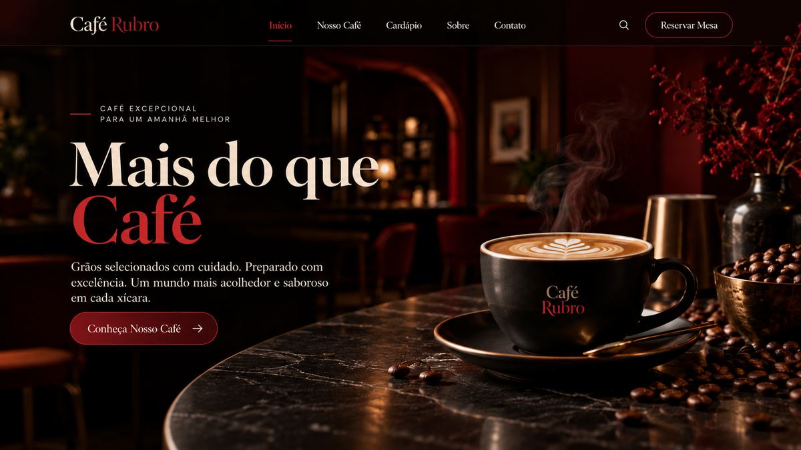
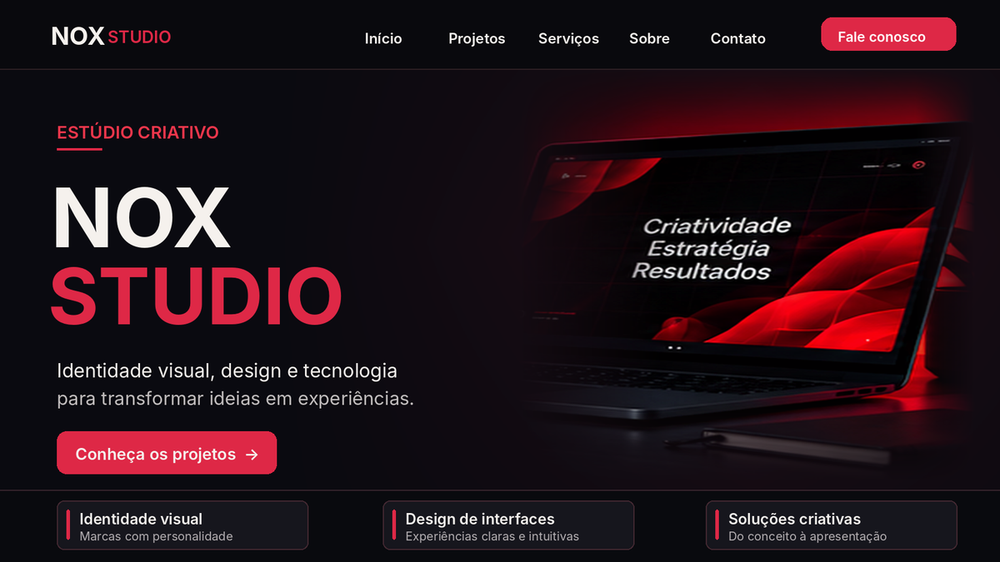
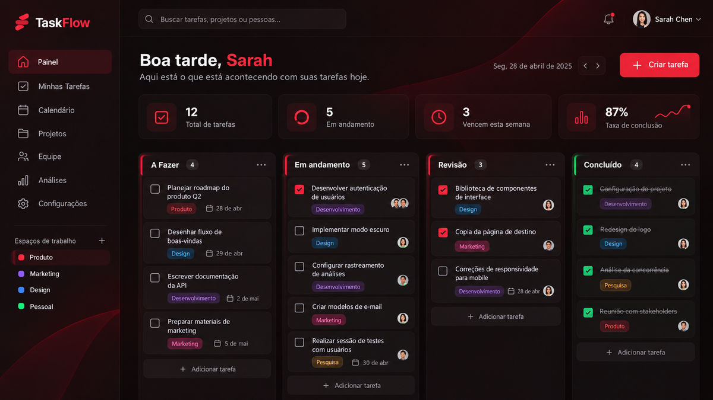

Café Rubro
Proposta de site para uma cafeteria, com apresentação da marca, cardápio resumido, horários e contato.
HTML
CSS
JavaScript
Explorando o mundo do desenvolvimento web, unindo criatividade, tecnologia e design.
Ver projetosEstou aprendendo desenvolvimento web e tenho interesse em criar sites bonitos, organizados e fáceis de usar.
Gosto de explorar ideias de design e conhecer melhor as tecnologias usadas na construção de páginas.
Quero continuar aprendendo e transformar minhas ideias em páginas cada vez mais criativas e funcionais.
Tecnologias que estou estudando e praticando no momento, unindo código e design.
Estruturação semântica e organização do conteúdo das páginas.
Estilização visual, layouts responsivos e design systems com variáveis.
Fundamentos de lógica, manipulação do DOM e interações na interface.
Ideias de interfaces que representam os tipos de projetos que gostaria de desenvolver futuramente, conforme avanço nos meus estudos. São propostas visuais ainda não desenvolvidas, e as tecnologias indicadas são previstas.

Proposta de site para uma cafeteria, com apresentação da marca, cardápio resumido, horários e contato.

Proposta de portfólio para um estúdio criativo, com apresentação de serviços e galeria de trabalhos.

Ideia de organizador de tarefas com funções planejadas de adicionar, concluir e filtrar atividades.
Tem alguma ideia ou projeto em mente? Entre em contato comigo. Estou sempre aberto a novas oportunidades e a aprender coisas novas.